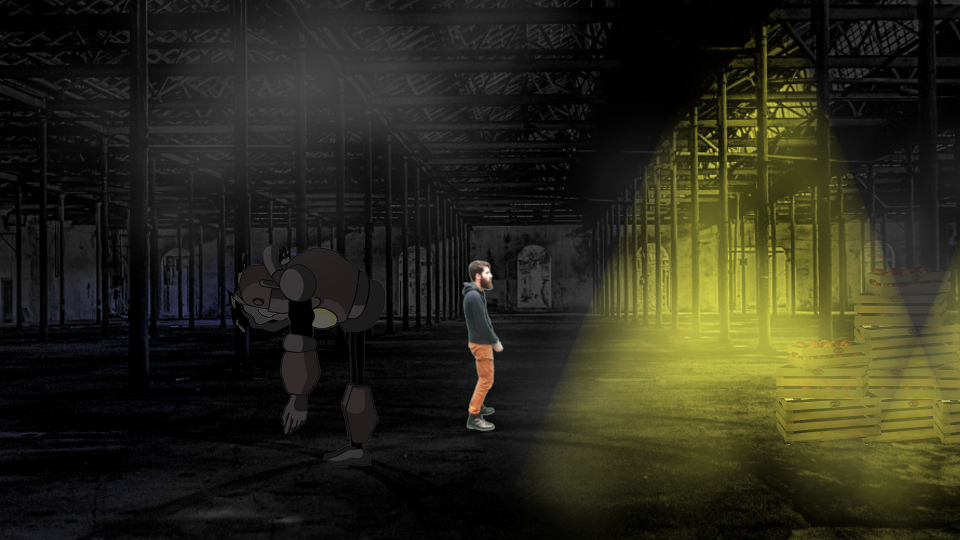

Games
Tower Forge (2020)

Aliens are trying to enter dwarves' fortress
Tower Forge is a tower defense type game I made in collaboration with Johan Poncet . In Tower Forge, you play as dwarves defending their city against an alien invasion. They way the game differs from others tower defense games is that you can build the towers the way you want, choosing the combination of base/weapon each tower is going to use. It is up to the player to choose what element will go well with the others to make sure no alien will get through his defenses. This game is available on the itch.io website and was developed using Unity.
Color Race (2020)

Changing self color to get through obstacles
Color Race is an arcade game developed for mobiles where the player has to get though colored obstacles. The only way to survive is to not hit these, unless the player's color is the same than the obstacle. The goal of this game was to me, as a developer, to learn about game publishing on a store and how ads integration works. Color Race was developed using Unity, Photoshop, FL Studio and Audacity.
2045 (2020)
Escaping the lights to get liberty back
On January 2020, the ESIR Game Jam (my engineering school) was organized. This Game Jam's theme was "Safe In the Dark". With my group made of four people including another programmer, we decided to make a two local player game where the first player is trying to escape from a prison. The second player helps him in achieving this goal after becoming "Shadow", an entity able to hide every source of light and deactivating it. 2045 was made in 35 hours using Unity, Photoshop and Audacity.
Pop-Up Run (2019)

Travelling int he city of the Internet
Pop-Up run was my submission at the GDA Jam in 2019 made in a team of four people. The theme was "No Signal". I was the only programmer on the team as the three other were digital artists students. In Pop-Up Run, you have to find your way through the Internet with a runner-like gameplay while ads keep coming to cover your UI. You have to close enough ads to open the end of the game where you can finally be at peace. But be careful ! If you click on ads instead of closing theme, more ads will be coming ! The game was made using Unity, Photoshop, 3DS Max and Audacity.